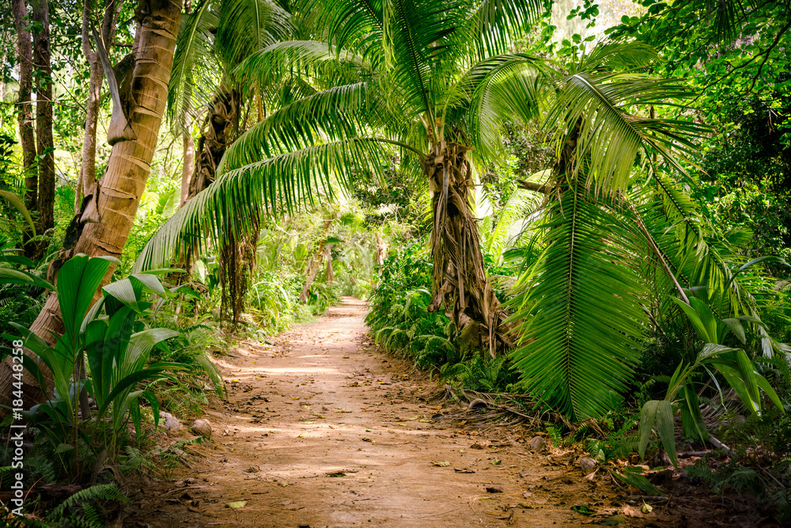

Color Use in Website Design
What Are Warm and Cool Colors?
Warm colors include red, orange, and yellow. These colors often create feelings of energy, excitement, happiness, and passion.
Cool colors include blue, green, and purple. These colors usually create calm, peaceful, professional, and trustworthy feelings.
How Does a Color's Effect Change Depending on Nearby Colors?
A color can appear different depending on the colors around it. This idea is called simultaneous contrast.
Bright colors stand out more against dark backgrounds, while similar colors create softer and calmer feelings.
Cultural Differences Related to Color and Meaning
- White: In a lot of Western countries, white is seen as a color of purity, weddings, and peace. But in some Asian cultures, it's more about sadness and funerals.
- Red: In the U.S. and many Western places, red usually means danger or a warning, like on stop signs. But in China, red is super lucky and is all about happiness and celebrations, especially during holidays and weddings.
- Green: It's often connected with nature and health.
Image 1 - Sea

This image creates a calm and professional mood using cool blue colors.
Image 2 - Sunset

This image creates an energetic and creative mood using warm colors.
Image 3 - Jungle

This image creates a peaceful and natural mood with green earthy colors.
Sources
- Colors Palette Generator - http://www.degraeve.com/color-palette/index.php
- Benjaminmoore Warm And Cool Colors - https://www.benjaminmoore.com/en-us/color-overview/color-insights/warm-and-cool-colors
- What Is Simultaneous Contrast - https://www.colorduels.com/what-is-simultaneous-contrast/
- Color Symbolism in Different Cultures Around the World - https://www.color-meanings.com/color-symbolism-different-cultures/